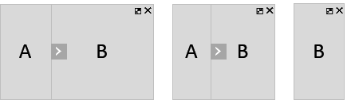
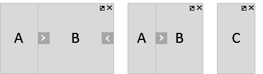
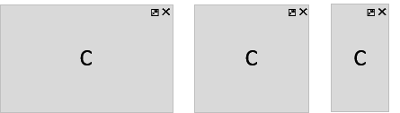

Types of Layout
Types of Layout
Although the FlexibleColumnLayout can display 2 or 3 pages at one time, they
can never have equal width (50%/50% or 33%/33%/33%). One of the pages is always larger
(expanded) or even takes up the full width of the control (fullscreen). This is
intentional because users should have a clear indication of what to focus their
attention on at any given moment, for example, a list of items, one particular item, one
item’s details.
Transitioning from a one-column layout to any two-column layout, and then to any three-column
layout is seen by the user as new columns appearing/disappearing on desktop/tablet or
the next column replacing the previous one - on phone (small screen size). The app does
not need to provide separate logic for the different screen sizes, but only change the
layout based on the user input and desired behavior. The
FlexibleColumnLayout will internally manage column visibility and
resizing. If at any time, the browser size changes, this will be reflected by the
control automatically.
There are 9 allowed variations of width and visibility for the 3 columns. They are represented
with the values of the layout property, which is of type
sap.f.LayoutType.
The table below shows how each of the 9 layout types affects the column visibility and width, based on the control size:
|
Layout Types |
Desktop / Tablet / Phone |
|---|---|
|
This is the default layout type for a
Use to show the first logical information level (master page) only. |
 |
|
Use this layout type to display two logical levels of information
(master and detail pages, master being expanded) on desktop/tablet,
or the second logical level of information only (detail page) on
phone. On desktop/tablet the transition from
|
|
|
Similar to |
 |
|
Use this layout to display the second logical level of information
(detail page) only. The On small screen sizes, the layouts
|
|
|
Use this layout to display up to three logical levels of information side by side (master,
detail, and detail-detail pages), when the user should focus
primarily on the content of the |
 |
|
Similar to |
|
|
Use this layout to show the |
 |
|
Similar to |
|
|
Use this layout to display the third logical level of information
(detail-detail page) only. The On small screen sizes all three-column layouts and
|
 |
For each value of the layout property, the FlexibleColumnLayout displays a
different combination of columns, based on the available control width (or screen width,
if the control takes up the whole screen).
|
Control size |
Columns |
|---|---|
|
Up to 960px (Phone) |
1 column max |
|
960px – 1280px (Tablet) |
2 column max |
|
1280px and above (Desktop) |
3 column max |